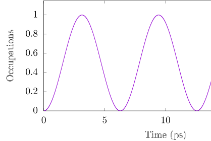
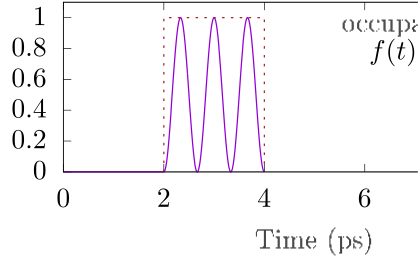

Next: Including environments Up: documentation Previous: General usage
In this section, we focus on the usage of the ACE code on examples without explicit environment parts, i.e., closed few-level systems or Lindblad master equations.
We begin with some of the most important parameters: The starting time, the final time, and the time step width can be specified by the command line options -ta, -te, and -dt, respectively, which have the default values 0, 10, and 0.01. You will find the corresponding time grid in the first column of output file ACE.out, whose name may be changed via the option -outfile. By default, there will be no environment, the system is a two-level system (TLS) initially in its ground state, and the system Hamiltonian is . For TLSs, if not specified otherwise, the second and third columns in the output file will be the real and imaginary part of the diagonal element of the system density matrix corresponding to the exited state. If no parameters are specified explicitly, these columns should remain 0.
As a first example, run
> ACE -dt 0.001 -te 20 -add_Hamiltonian "{hbar/2*(|1><0|_2+|0><1|_2)}" -outfile ACE1.out
This will generate an output file ACE1.out, which contains the dynamics
of a constantly driven TLS from 0 to 20 ps with time steps of 0.001 ps.
The driving is described by the Hamiltonian
(note: hbar is given
in units of meVps).
Plotting the second column of ACE1.out
(in gnuplot: plot "ACE1.out" using 1:2 with lines) reveals clear
Rabi oscillations of the excited state occupations:

The same result can be obtained creating and editing the file driver1.param:
dt 0.001
te 20
add_Hamiltonian {hbar/2*(|1><0|_2+|0><1|_2)}
outfile ACE1.out
and running
> ACE -driver driver1.paramor simply
> ACE driver1.paramI.e., the first parameter is interpreted as a driver file.
A more complicated scenario can be described by the
following driver file (driver2.param), where an initially excited
TLS, optionally subject to radiative decay described by a
Lindblad term, is driven by a Gaussian laser pulse:
dt 0.01
te 20
initial {|1><1|_2}
#add_Lindblad 0.5 {|0><1|_2}
add_Pulse Gauss 10 1 {1.*pi} 0 {hbar/2*|1><0|_2}
outfile ACE2.out
This produces the following dynamics:
![\includegraphics[width=20cm]{figs/example2.eps}](img71.svg)
where the two curves are results of calculations where the Lindblad term is
either turned off or on. The # symbol in a driver file indicates a comment,
i.e. anything after it is ignored. The parameters of add_Lindblad
are the rate and the operator  for the Lindblad term
for the Lindblad term
| (7) |
The parameters of add_Pulse Gauss are the pulse center
(here: ps),
the pulse duration (
 ps), the pulse area (), the
detuning ( meV), and the operator (
)
describing the light-matter coupling, which enter the driving Hamiltonian
ps), the pulse area (), the
detuning ( meV), and the operator (
)
describing the light-matter coupling, which enter the driving Hamiltonian
| (8) |
Alternatively, one can use arbitrary pulses by reading them from file.
The first column is the time, the second and third columns are the
real and imaginary parts of . For example, the file
step.pulse, which contains
1.999999 0 0 2 1 0 3.999999 1 0 4. 0 0
As data points are linearly interpolated and the value of the first and last
data points are extended to and , respectively, this
describes a function whose real part is a rectangular function with height 1
from time 2 to 4 while the imaginary part is zero.
Running ACE with the following driver file
pulse_from_file.param
te 10
dt 0.01
initial {|0><0|_2}
add_Pulse File step.pulse {(3*pi)*hbar/2*|1><0|_2}
add_Output {|1><1|_2}
outfile pulse_from_file.out
Using the type File as the first argument of the parameter
add_Pulse tells the code to read the file whose name is given as the
second argument. The third argument is again the operator with which it enters
the Hamiltonian. Note that the factor 3*pi in the operator scales the
pulse from height 1 to , and because the pulse is finite for a time
2, the overall pulse area is , i.e. 3 complete Rabi flops. This is
clearly seen in the dynamics in the figure below
